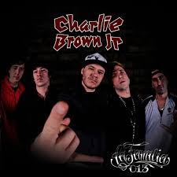

Podcasts que curto
Gosto muito de ouvir podcasts informativos e reflexivos. Eles me ajudam a entender melhor o mundo e a expandir meu olhar.
O Assunto traz análises diárias sobre os principais temas do noticiário brasileiro, com profundidade e clareza.
Rádio Escafandro é narrativo e investigativo. Gosto do tom humano e das histórias contadas de forma poética e crítica.
Bandas favoritas
A música é parte do meu dia a dia. Escuto para relaxar, pensar ou me concentrar.
Duas das bandas que mais escuto são

Charlie Brown Jr (CBJR) mistura rock, rap e skate com mensagens de atitude e autenticidade.

Lagum tem um som mais leve e tropical, perfeito pra momentos descontraídos.